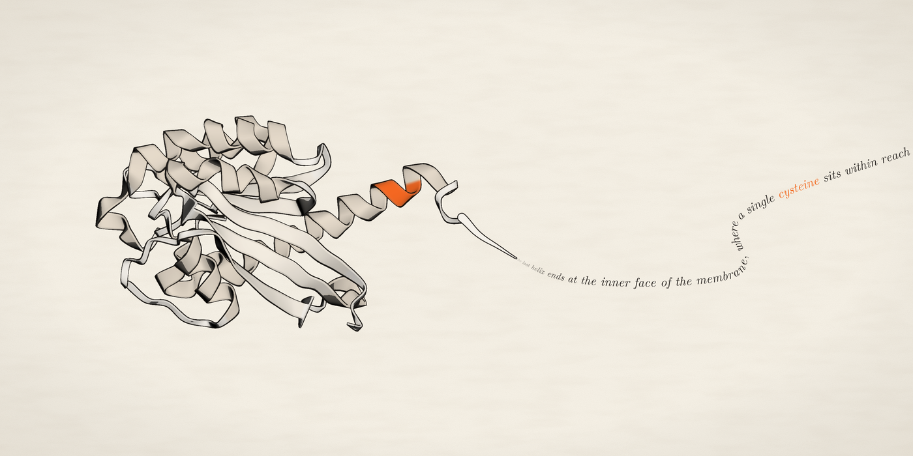

BioReason-Pro 2
HuggingFace models BioReason-Pro 2 Hypothesis Atlas

Read our blog: Building stronger biological reasoning models
Multimodal protein function prediction. A protein's ESM3 embedding and its biological context (organism, GO-GPT's GO term predictions, known interaction partners and, optionally, its InterPro features) go into one language model, which reasons about the protein and answers with its function and GO terms. BioReason-Pro 2 follows BioReason-Pro.
This repository holds the code that predicts with the models, scores them and trains them (supervised fine-tuning, then reinforcement learning), together with GO-GPT, the GO term predictor whose output the prompt carries. The code is under the MIT license; the model weights are under OpenMDW-1.1.
Models
| model | Hub | description |
|---|---|---|
| BioReason-Pro 2 RL | nvidia/BioReason-Pro-2-9B-RL | the SFT model after GRPO with an LLM-judge reward |
| BioReason-Pro 2 SFT | nvidia/BioReason-Pro-2-9B-SFT | Qwen3.5-9B fine-tuned on 272,688 Kimi K3 reasoning traces |
Both read the protein through frozen ESM3 (layer 37, with the structure when one is given) and a GO graph encoder, and take the same prompt with or without the InterPro feature block.
Predict new proteins
Prediction needs the inference environment (Setup), one CUDA GPU (inference fits one 80 GB card) and the GO embeddings:
bashpython scripts/data/download_assets.py --dest assets --skip-structures --skip-ia # GO embeddings only python predict.py --input data/examples/proteins.tsv --output runs/example/predictions.tsv
predict.py runs three steps: optional InterPro features, GO-GPT's GO term predictions, then generation with the RL model (--model sft for the SFT one, --checkpoint <dir or Hub id> for any other). It builds each prompt with the same builder as the training prompts (scripts/data/build_question.py). The checkpoint, ESM3 (esm3_sm_open_v1, fetched by the esm package), GO-GPT (wanglab/gogpt-v2) and GO-GPT's ESM2 encoder download on first use.
Input, a tab-separated file with a header row:
| column | required | content |
|---|---|---|
protein_id | required | unique; the key of every output and cache |
organism | required | as in UniProt, e.g. Homo sapiens (Human); shown in the prompt |
sequence | required | amino acids; the model and GO-GPT read the first 2,000 residues |
taxid | optional | NCBI taxonomy id, which GO-GPT prefers to the organism name |
partners | optional | interaction partner names separated by ~ |
structure_path | optional | a .pdb or mmCIF file of chain A, resolved from the working directory |
The models were trained with partners withheld on 80% of samples and the structure on 50%, so leaving either out is in distribution. A structure whose backbone does not match the sequence, or a file that cannot be read, falls back to the sequence alone.
Options.
--gogpt_revision: GO-GPT's epoch-75 checkpoint (ep75, the default and themainof
wanglab/gogpt-v2) is the one whose predictions the models were trained and scored with; ep89 is GO-GPT's later checkpoint, slightly better at GO on its own.
--interpro: adds the InterPro feature block from InterPro's precomputed InterProScan results, and
submits sequences InterPro has not scanned to EBI's InterProScan service, which needs a real --email (without one, such proteins get the prompt without the block, with a warning). --interproscan_dir <InterProScan 5> runs a local InterProScan instead (--cpu threads). interpro_api.py converts the results into the records the model was trained on. Those came from InterProScan 5.78-109.0; the online sources run InterPro's current release, so only a local 5.78-109.0 matches the training release.
--batch_size(16) and--gpu_memory_utilization(0.45, vLLM's share of the GPU; ESM3 and the GO
encoder allocate outside it).
--resume: skips proteins already in the output and reuses the GO-GPT and InterPro results cached
beside it. Without it, a second run appends to the same output file.
Output: one row per protein with protein_id, organism, sequence_length, features (the prompt's InterPro block), gogpt (the prompt's GO-GPT block), question (the full prompt) and generated_response. Cells span several lines, so read the file with csv or pandas. GO-GPT's and InterPro's results are cached beside it as <output>_gogpt.json and <output>_interpro.json.
Decoding is greedy, in a 16,384-token window with up to 8,000 generated tokens. The response is the reasoning, </think>, then an answer with a summary, InterPro entries, confident and speculated GO terms per aspect, and hypothesized interaction partners. The scorer's parser pulls out the GO ids:
pythonfrom evals.cafa.cafa_evals import extract_go_terms go_ids = extract_go_terms(response, "both") # confident and speculated terms, as the results score
Evaluate
Evaluate on the benchmark
The benchmark is the test split of the proteins_extra config of wanglab/bioreason-pro-v2 (6,112 proteins). Fetch it, build the prompt tables, generate and score:
bashpython scripts/data/fetch_corpus.py # -> data/v2/proteins python scripts/data/prepare_corpus.py --src data/v2 --out data/v2-ep75 python scripts/data/build_question.py --v2-root data/v2-ep75 --out data/sft/v2-nofeatures --no-features python scripts/data/build_question.py --v2-root data/v2-ep75 --out data/sft/v2-features hf download nvidia/BioReason-Pro-2-9B-RL --local-dir ckpt/rl CKPT_DIR=ckpt/rl bash scripts/eval/eval.sh # without InterPro CKPT_DIR=ckpt/rl EVAL_TABLE=data/sft/v2-features bash scripts/eval/eval.sh # with InterPro
fetch_corpus.py joins the dataset's proteins with their GO-GPT predictions (a separate config). The tables built from it hold the same prompts and labels, protein for protein, as the tables the models were scored on. scripts/eval/eval.sh runs eval.py, one JSON per protein in results/<checkpoint> (resumable; shard with NUM_CHUNKS / CHUNK_ID, one GPU each), then scores it with evals/cafa/cafa_evals.py. A sharded run prints the scoring command to run after the last shard instead. The scorer's defaults are the benchmark's (--go_track both --reasoning_mode True); it needs the CAFA 6 IA weights (Setup) and deletes an existing --output_dir before writing.
In the published generations, 444 test proteins without a structure, batched with ones that have one, reached ESM3 as an all-zero backbone; eval.py now encodes them from the sequence alone, as supervised training did, and regenerating them moves the GO, residue, InterPro and span values below by at most 0.002.
The judge and grounding call an OpenAI-compatible endpoint of your own (JUDGE_BASE_URL ending in /v1, JUDGE_API_KEY, JUDGE_MODEL); the published values used Nemotron 3.5 Super VL at reasoning effort max.
- LLM judge (
evals/judge/, protocol in its README): exports the 1,000 proteins of
data/eval/judge_subset.txt with their annotation from data/v2/proteins, then scores each answer 1-10 on five axes.
- Grounding (
evals/grounding/grounding.py):readhas the endpoint
read which feature types each answer asserts; score then checks the answer's residues, InterPro entries, feature presence and spans against the protein, offline. Its reference covers the benchmark's proteins only.
Evaluate on your own labelled proteins
Generate with predict.py, then write one JSON per protein, _all_k00.json, into a directory:
| key | content |
|---|---|
protein_id | the protein |
generated_response | the predictions.tsv column |
success | true |
go_mf, go_bp, go_cc | the protein's GO ids per aspect (GO release 2023-01-01; an aspect with none is not scored) |
go_mf_tier2, ... | optional, a second label tier added to the first |
scored_aspects | optional, the aspects to score, e.g. ["MF", "BP"] |
bashpython evals/cafa/cafa_evals.py --input_dir mine/ --ontology bioreason2/dataset/go-basic.obo \ --ia_file data/IA_CAFA6.tsv --output_dir mine-scores
Metrics
- Fmax: the F1 of predicted against true GO terms, both propagated to their ancestors, averaged over
the three aspects (best_f.tsv, column f); every predicted term has score 1, so there is one threshold.
- IA-weighted Fmax, precision, recall: the same, each term weighted by its CAFA 6 information
accretion (f_w, pr_w, rc_w).
- LLM judge: 1-10 for molecular function, biological process, cellular component, specificity and
reliability, against the protein's annotation.
- Cited residue accuracy: share of residues the answer names at a position that are that residue.
- InterPro precision: share of InterPro entries named that the protein has.
- Feature presence F1: whether the answer says the protein has a transmembrane helix, signal peptide
or coiled coil, against its annotation.
- Spans within 5 residues: share of claimed feature spans within 5 residues of a real feature of
their type.
Results
The benchmark, without / with the InterPro block. GO scores are means over the three aspects, on confident plus speculated terms; the judge is Nemotron 3.5 Super VL at reasoning effort max scoring 1-10 on a fixed 1,000-protein sample. The grounding rows are pooled over the test split (5,939 proteins for residues, presence and spans).
| metric | SFT | RL |
|---|---|---|
| LLM judge, mean of 5 axes | 7.24 / 7.72 | 7.74 / 8.43 |
| molecular function | 7.61 / 8.05 | 8.05 / 8.60 |
| biological process | 7.12 / 7.51 | 7.37 / 8.06 |
| cellular component | 8.13 / 8.37 | 8.39 / 8.71 |
| specificity | 9.41 / 9.62 | 9.53 / 9.82 |
| reliability | 3.92 / 5.06 | 5.34 / 6.97 |
| Fmax | 0.629 / 0.640 | 0.662 / 0.667 |
| IA-weighted Fmax | 0.551 / 0.566 | 0.590 / 0.597 |
| IA-weighted precision | 0.502 / 0.516 | 0.555 / 0.559 |
| IA-weighted recall | 0.618 / 0.633 | 0.635 / 0.645 |
| cited residue accuracy | 0.955 / 0.957 | 0.976 / 0.977 |
| InterPro precision | 0.787 / 0.945 | 0.853 / 0.984 |
| feature presence F1 | 0.857 / 0.890 | 0.856 / 0.896 |
| spans within 5 residues | 0.845 / 0.871 | 0.886 / 0.917 |
Setup
Inference and training need different environments: they pin different torch and transformers versions. Both run on GPUs.
bash# inference: predict.py, eval.py, scoring, judge conda create -n brp-eval python=3.12 -y && conda activate brp-eval pip install esm==3.4.0 --no-deps pip install -e ".[eval]" # training conda create -n brp-train python=3.12 -y && conda activate brp-train pip install esm==3.4.0 --no-deps pip install -e ".[train]" pip install flash-attn==2.8.3 --no-build-isolation --no-cache-dir
Install in this order: esm with --no-deps, and flash-attn after torch (it needs nvcc). GO-GPT (gogpt/) is its own package: pip install -e gogpt in either environment ("gogpt[train]" to train it); predict.py finds it without the install.
download_assets.py fetches what the repository does not ship:
| asset | needed for | flag to skip |
|---|---|---|
GO embeddings (wanglab/bioreason-pro-go-embeddings) | everything | --skip-go-embeddings |
AlphaFold structures (wanglab/bioreason-pro-structures, ~150 GB; --referenced-only keeps the ~108 GB the corpus names) | the benchmark and training as published; without them, USE_STRUCTURE=False evaluates on the sequence alone | --skip-structures |
CAFA 6 IA weights (data/IA_CAFA6.tsv) | scoring | --skip-ia |
bashpython scripts/data/download_assets.py --dest assets # everything python scripts/data/download_assets.py --dest assets --verify # add --skip-ia when not scoring python -m bioreason2.paths # what resolves
CAFA publishes the IA weights without a license, so they are fetched from the CAFA 6 Kaggle competition (an account that accepted its rules, KAGGLE_USERNAME and KAGGLE_KEY set).
Train
The proteins and labels come from wanglab/bioreason-pro-v2: training used the train split of its proteins config and the train and ground splits of its proteins_extra config, except the 1,321 proteins whose traces failed quality checks, listed in data/splits/train_excluded.txt (fetch_corpus.py --split train). The Kimi K3 reasoning traces, SFT's targets, are not released, so supervised fine-tuning cannot be reproduced from public data; reinforcement learning can.
Supervised fine-tuning, in the training environment, on a nofeatures table built with traces:
bashbash scripts/sft/train.sh
Stage 1 trains the protein projector, GO projector and GO encoder with the LLM frozen (1 epoch); stage 2 adds LoRA r128/α256 on every linear layer (10 epochs). lr 1e-4 with 5% warmup then cosine, effective batch 32 on any GPU count that divides it, text 16,384 and protein 2,000 tokens; partners withheld on 80% of samples and structure on 50%.
The released checkpoints were trained with esm 3.2.1.post1. Training now uses esm 3.4.0, as inference does, for its MIT license. The two give identical sequence-only ESM3 embeddings; with a structure, 3.4.0's differ slightly (mean cosine similarity 0.9989, lowest residue 0.93) and are the ones inference uses. Training also now runs on transformers + PEFT, where the released checkpoints came from an earlier internal environment. A retrain on the same data can therefore differ slightly from the released checkpoints.
The released SFT model is epoch 07, converted for eval.py with:
bashpython bioreason2/utils/save_hf_ckpt.py \ --checkpoint_path <run>/<run>-stage2-epoch=07.ckpt --save_dir ckpt/my-sft \ --text_model_name Qwen/Qwen3.5-9B --protein_model_name esm3_sm_open_v1 \ --max_length_text 16384 --max_length_protein 2000 \ --lora_rank 128 --lora_alpha 256 --lora_dropout 0 \ --protein_embedding_layer 37 --go_obo_path bioreason2/dataset/go-basic.obo \ --precomputed_embeddings_path assets/go_embeddings --go_hidden_dim 512 \ --go_num_gat_layers 3 --go_num_heads 8 --go_num_reduced_embeddings 200 \ --go_embedding_dim 2560 \ --protein_projection_norm blocknorm --protein_projection_norm_target 0.0133
Reinforcement learning: GRPO from the SFT model, one epoch (90 steps) over 2,905 proteins of the SFT validation split, 32 prompts x 16 rollouts, LoRA r64/α128, lr 2e-5, KL 0.001, half the prompts with the InterPro block. The reward is an LLM judge (Kimi K3, effort low) scoring each answer on five axes with scripts/rl/judge_rubric.md, times a length factor. It runs on SkyRL with this repository's patch (skyrl/) on one 8-GPU node; the steps, including the prompt tables from public data, are in scripts/rl/README.md.
Reasoning traces
synth/ holds the two prompt templates Kimi K3 wrote the training traces from, and how to write more from wanglab/bioreason-pro-v2. The traces themselves are not released.
Tests
bashpip install -e ".[dev]" pytest tests/ gogpt/tests/ -m "not slow"
Most need only the CPU. test_inference_inputs.py needs the inference environment, the collation and grounding-target tests the training environment, the GO encoder test the GO embeddings, and test_eval_guards.py a checkpoint (TEST_CKPT); the slow GO-GPT test downloads the released GO-GPT. Five scripts check built artifacts and run directly: test_sft_question_pipeline.py, test_dropout_integrity.py and test_sft_batch.py read a prompt table (BRP_SFT_DIR), test_feature_block_provenance.py the tables and the prepared corpus, and test_hub_dataset_contract.py checks that wanglab/bioreason-pro-v2 still carries every column the code reads (it downloads the test shards).
Repository layout
| path | content |
|---|---|
| Predict | |
predict.py | end-to-end prediction from a TSV: InterPro (optional), GO-GPT, prompt, generation |
gogpt_api.py | loads GO-GPT and renders its block of the prompt |
interpro_api.py | InterProScan results (EBI lookup, EBI job or local run) as the prompt's feature records |
data/examples/proteins.tsv | six example proteins |
| Evaluate | |
eval.py | batched vLLM generation over a prompt table, one JSON per protein |
scripts/eval/eval.sh | the benchmark run: eval.py, then scoring |
evals/cafa/ | GO term extraction and the CAFA metrics (Fmax, IA-weighted) |
evals/judge/ | LLM judge: prompt, runner and protocol |
evals/grounding/ | grounding scorer, its claim patterns and offline reference |
data/eval/judge_subset.txt | the 1,000 proteins the judge scores |
| Data and prompts | |
scripts/data/fetch_corpus.py | the corpus from wanglab/bioreason-pro-v2, with GO-GPT's predictions joined |
scripts/data/prepare_corpus.py | renders GO-GPT's epoch-75 block and adds the split |
scripts/data/build_question.py, question_template.py | the prompt tables and the prompt template |
scripts/data/download_assets.py | GO embeddings, structures and IA weights |
data/splits/train_excluded.txt | the 1,321 proteins left out of training |
bioreason2/paths.py | every Hub id and default path; python -m bioreason2.paths |
| Model | |
bioreason2/models/ | the training model, the vLLM model, ESM3 and GO graph encoders, projection norms |
bioreason2/dataset/ | table loading, collation, context and structure dropout, annotation rendering, the GO ontology |
bioreason2/utils/ | checkpoint conversion for eval.py |
| Train | |
train_protein_llm.py, scripts/sft/train.sh | supervised fine-tuning, both stages |
scripts/rl/, bioreason2/rl/ | GRPO: environment, checkpoint, data, judge reward, launcher |
skyrl/ | the SkyRL patch RL runs on, and its fetch script |
data/rl/ | the 2,905 RL proteins and the 2 kept on the plain prompt |
| Other | |
gogpt/ | GO-GPT: model, inference, training, tests |
synth/ | the trace prompt templates |
tests/ | tests |
LICENSE, LICENSES/, THIRD_PARTY_NOTICES.md | licenses |
License
The code is under the MIT license (LICENSE); third-party material in the repository and its licenses are listed in THIRD_PARTY_NOTICES.md.
NOTICE AND DISCLAIMER: This software automatically retrieves, accesses or interacts with external materials. Those retrieved materials are not distributed with this software and are governed solely by separate terms, conditions and licenses. You are solely responsible for finding, reviewing and complying with all applicable terms, conditions, and licenses, and for verifying the security, integrity and suitability of any retrieved materials for your specific use case. This software is provided "AS IS", without warranty of any kind. The author makes no representations or warranties regarding any retrieved materials, and assumes no liability for any losses, damages, liabilities or legal consequences from your use or inability to use this software or any retrieved materials. Use this software and the retrieved materials at your own risk.
Citation
bibtex@article{nainani2026biologicalreasoning, author = {Nainani, Jatin and Fallahpour, Adibvafa and Srinivasan, Savitha and Choi, Benedict and Seyed-Ahmadi, Arman and Pearce, Michael and Bigelow, Eric and Idehpour, Parsa and Wilber, Jared and St. John, Peter and St. John, John and Wang, Bo and Jain, Archa and Rvachov, Timur and Goodarzi, Hani and Wang, Nicholas}, title = {Building stronger biological reasoning models}, journal = {Goodfire Research}, year = {2026}, url = {https://www.goodfire.com/research/building-stronger-biological-reasoning-models} } @article{Fallahpour2026.03.19.712954, author = {Fallahpour, Adibvafa and Seyed-Ahmadi, Arman and Idehpour, Parsa and Ibrahim, Omar and Gupta, Purav and Naimer, Jack and Zhu, Kevin and Shah, Arnav and Ma, Shihao and Adduri, Abhinav and G{\"u}loglu, Talu and Liu, Nuo and Cui, Haotian and Jain, Arihant and de Castro, Max and Fallahpour, Amirfaham and Cembellin-Prieto, Antonio and Stiles, John S. and Nem{\v c}ko, Filip and Nevue, Alexander A. and Moon, Hyungseok C. and Sosnick, Lucas and Markham, Olivia and Duan, Haonan and Lee, Michelle Y. Y. and Salvador, Andrea F. M. and Maddison, Chris J. and Thaiss, Christoph A. and Ricci-Tam, Chiara and Plosky, Brian S. and Burke, Dave P. and Hsu, Patrick D. and Goodarzi, Hani and Wang, Bo}, title = {BioReason-Pro: Advancing Protein Function Prediction with Multimodal Biological Reasoning}, elocation-id = {2026.03.19.712954}, year = {2026}, doi = {10.64898/2026.03.19.712954}, publisher = {Cold Spring Harbor Laboratory}, URL = {https://www.biorxiv.org/content/early/2026/03/20/2026.03.19.712954}, eprint = {https://www.biorxiv.org/content/early/2026/03/20/2026.03.19.712954.full.pdf}, journal = {bioRxiv} }